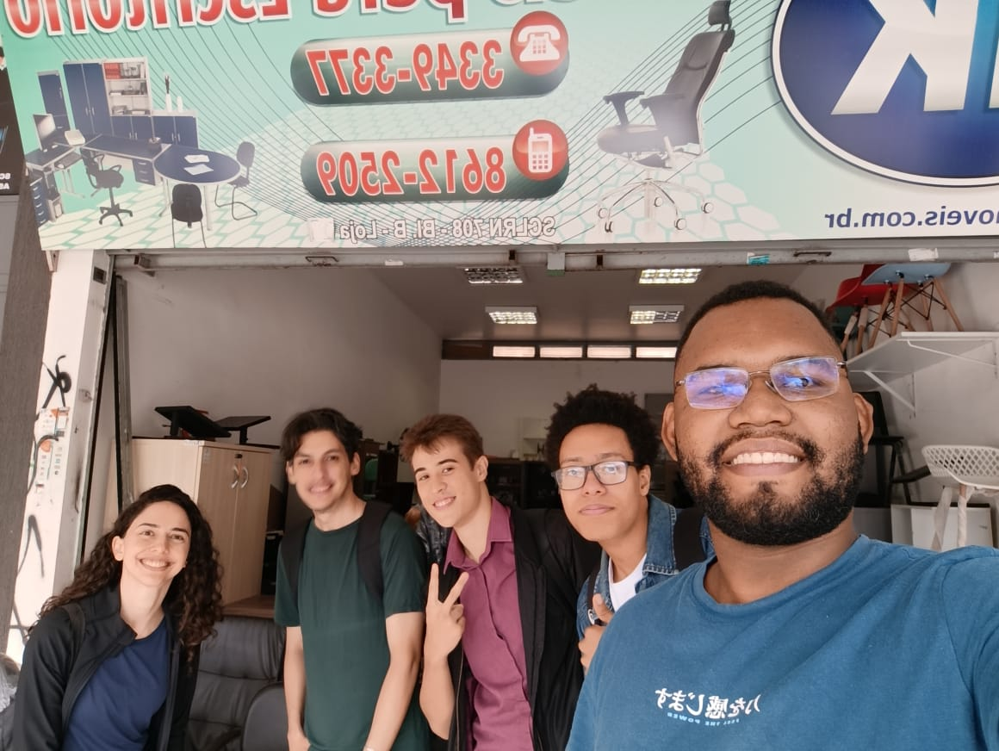
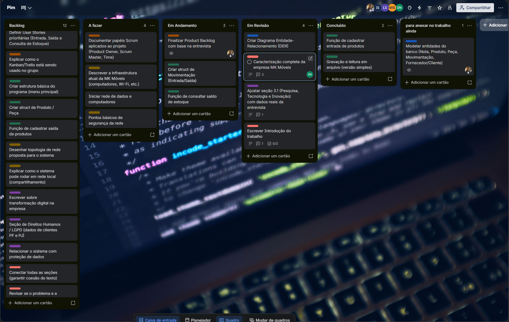

Dados Dispersos
Controle fragmentado entre Excel, papel e conferência visual.
Solução Computacional para
Transformação digital do fluxo de entradas, saídas e saldos na MK Móveis de Escritórios e Planejados — Brasília/DF.
O crescimento comercial expôs o limite das planilhas soltas e anotações em papel na rotina da loja.
Controle fragmentado entre Excel, papel e conferência visual.
Diferença recorrente entre o estoque registrado e o físico.
Demora para localizar peças e confirmar disponibilidade.
Retrabalho diário e perda de oportunidades de venda.
Como tornar o registro de entradas, saídas e saldos da MK Móveis rápido, organizado e confiável?
Escritórios, Planejados & Persianas
Empresa familiar na Asa Norte (SHCGN 708), especializada em mobiliário corporativo e manutenção de cadeiras.

Automatizar o controle de estoque da MK Móveis, estruturando o fluxo de entradas e saídas para eliminar divergências.
Foco em rastreabilidade, precisão de saldo e prevenção ao desabastecimento.
Substituir controles manuais por saldo preciso em tempo real.
Autonomia e segurança para sócios, administrativo e vendas.
Lançamento ágil apoiado nas notas fiscais e pedidos.
Histórico completo e disponibilidade instantânea para vendas.
Gestão visual, limite de WIP e revisão cruzada entre os 5 integrantes.
Coleta em 03/10/2026 com o sócio fundador Elias Marcos Moreira Gomes.

Cadastrar item · Registrar entrada e saída · Consultar saldo · Estornar
Resposta ≤ 2 s · Treino ≤ 30 min · SLA ≥ 99% · Backup diário · Senha hash
Proíbe saldo negativo · Código único · Inativação sem exclusão · Estorno auditável
SELECT p.nome, e.qtest FROM produto p JOIN estoque e ON p.codprod = e.codprod;
Menus interativos, leitura de entradas e mensagens claras de validação.
Funções modulares, if/else, laços e validação das Regras de Negócio.
Vetores e matrizes em memória integrados ao banco relacional SQL.
Monitoramento unificado de tráfego e políticas de acesso no switch.
A queda de uma estação não interrompe o restante da loja.
Rede local rápida aliada à escalabilidade da nuvem com custo enxuto.
Valorização do trabalho humano: menos retrabalho, mais autonomia para os 8 colaboradores.
CF/88 · Art. 1º · Dignidade da Pessoa HumanaConsulta de saldo e itens
Treinamento operacional
Ativo no horário comercial
Movimentações rastreáveis
Planilhas soltas, anotações em papel, saldo divergente e busca demorada no depósito.
Base centralizada, bloqueio de saldo negativo e disponibilidade imediata para vendas.
A solução integra Programação em C, Banco de Dados, Engenharia Ágil, Redes e Direitos Humanos para modernizar o estoque da MK Móveis sem substituir o sistema fiscal existente.
Aponte a câmera do seu celular para o QR Code abaixo para navegar pelos slides remotamente.